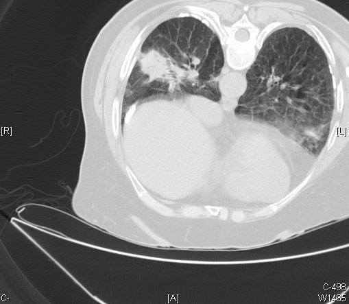

Ficha del catálogo
Patología pleural por asbesto y mesotelioma
- Sistema
- Respiratorio
- Modalidad
- TC
- Región
- Pleura
- Dificultad
- Avanzado
La exposición al asbesto produce lesiones pleurales benignas, como las placas, y una neoplasia maligna de la pleura, el mesotelioma, tras un periodo de latencia de décadas. Distinguir la enfermedad benigna de la maligna es la tarea principal del radiólogo en estos pacientes. El antecedente laboral es un dato imprescindible.
Técnica
Tomografía de tórax con contraste intravenoso, con cortes finos y reconstrucciones multiplanares que permitan valorar la superficie pleural en toda su extensión.
Qué observar
- Placas pleurales parietales bien delimitadas, a menudo calcificadas y bilaterales
- Engrosamiento pleural circunferencial y nodular, sugestivo de malignidad
- Afectación de la pleura mediastínica, dato de sospecha de mesotelioma
- Engrosamiento mayor de un centímetro y de superficie irregular
- Pérdida de volumen del hemitórax afectado con derrame asociado
- Fibrosis pulmonar basal acompañante en la asbestosis
Hallazgos
Engrosamiento pleural que puede ser en forma de placas localizadas y calcificadas o difuso, nodular y circunferencial con derrame y retracción del hemitórax.
Perlas
Los criterios que orientan a malignidad pleural son el engrosamiento circunferencial, la nodularidad, el grosor superior a un centímetro y la afectación de la pleura mediastínica. Las placas benignas por asbesto respetan característicamente los senos costofrénicos y los vértices.
Diagnóstico diferencial
- Empiema crónico organizado
- Colección con realce liso de ambas hojas y contexto infeccioso.
- Metástasis pleurales
- Nódulos pleurales múltiples con tumor primario conocido.
- Fibrotórax postinfeccioso
- Engrosamiento liso y estable con calcificaciones extensas.
Simuladores
- Grasa extrapleural
- Músculos intercostales prominentes
- Atelectasia redonda adyacente a placas
Por modalidad
- RX
- Detecta placas calcificadas y derrame
- TC
- Caracteriza el engrosamiento y su extensión
- RM
- Valora invasión de pared torácica y diafragma
Protocolo
Tomografía con contraste en fase venosa con cortes finos. Valoración de toda la superficie pleural incluyendo diafragma y cisuras.
Clasificación
Errores frecuentes
- Confundir grasa extrapleural con engrosamiento pleural patológico
- No preguntar por la exposición laboral al asbesto
- Interpretar una atelectasia redonda como masa tumoral

asbesto placas pleurales mesotelioma engrosamiento pleural pleura exposicion laboral